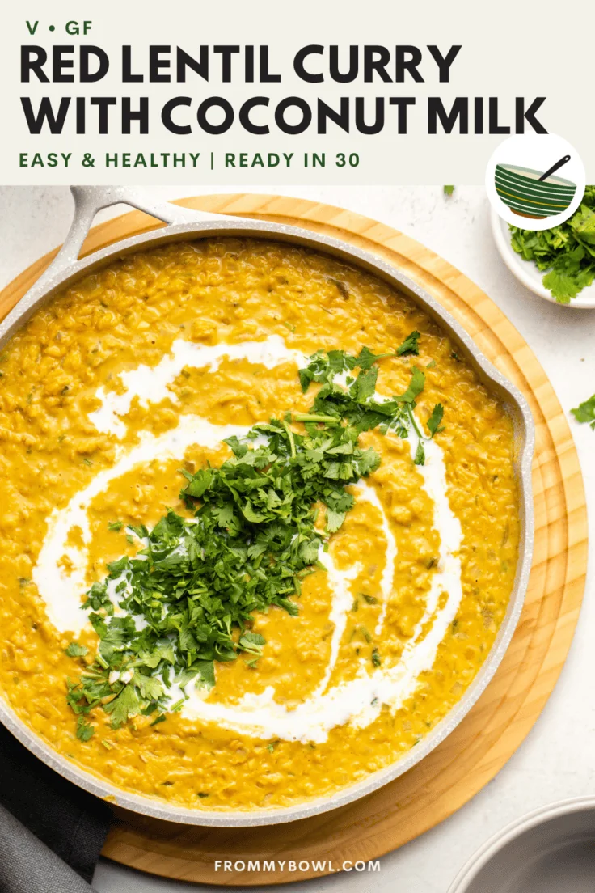

Red Lentil Curry

Description
Creamy coconut milk, protein-packed red lentils, and aromatic herbs and
spices combine to create this comforting, satisfying, but
totally-good-for-you Creamy Coconut & Red Lentil Curry. This red lentil
curry recipe is packed with cozy spices and wholesome flavor, plus it’s
naturally vegan and gluten-free!
Ingredients
- 1 small onion
- 3 cloves garlic
- 1 tablespoon ginger
- 1/2 bunch cilantro
- 1 tablespoon curry powder
- 1/4 - 1/2 teaspoon cayenne pepper (opt)
- 300g dry red lentils
- 400ml coconut milk
- 470ml vegetable broth
- 470ml water
- jasmine or basmati rice
Steps
-
Cook the Onion: Bring a large saucepan to medium heat and add a splash
of vegetable broth or neutral cooking oil. Add the onion to the pan and
sauté until translucent, 3 to 5 minutes
-
Add Aromatics:Add the garlic, ginger, and chopped cilantro stems to the
pan and sauté for an additional 1-2 minutes, then stir in the curry
powder and cook for an additional minute.
-
Simmer: Add the lentils to the pan with the coconut milk, vegetable
broth, and water; stir to combine. Bring to a boil over high heat, then
reduce the heat to medium-low and simmer for 18 to 20 minutes, or until
the lentils are tender. Stir occasionally to ensure even cooking and
flavor distribution.
-
Serve & Store: Serve warm with rice and with the reserved cilantro
leaves, or as desired. Store leftovers in an airtight container in the
refrigerator for up to 5 days, or they can be frozen for up to two
months.
Original recipe
Home